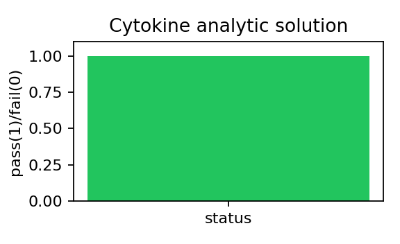

Test path: tests/test_cytokine_analytic.py::test_cytokine_zero_diffusion_matches_closed_form
What simulation is run: Compares zero-diffusion cytokine ODE update to closed-form reference.
Status: PASS
Result plot

Why this test matters
This numerical verification test checks solver stability/consistency for one component before coupling it into multiscale fibrosis simulations.